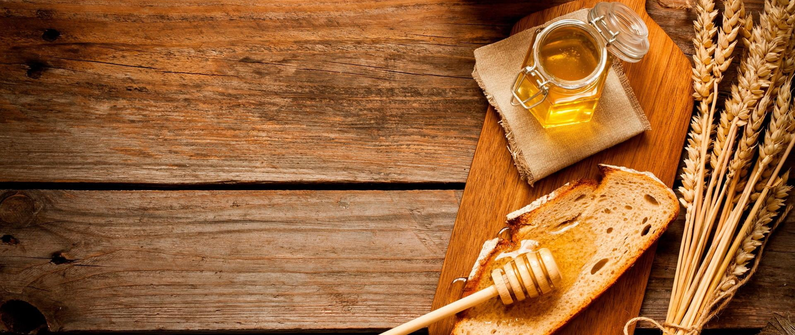
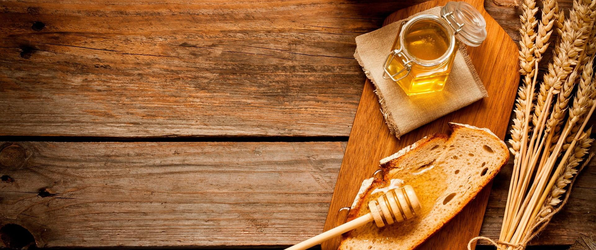

Livadski
Lepi livadski med, jedan je od nasih favorita.
Šumski

Lepi šumski med, iz nasih domacih suma.
Mešoviti

Lepi mešoviti med, najprodavaniji nas proizvod
Livadski
Šumski
Mešoviti
Naselje Kovin je sedište istoimene opštine, u Vojvodini, u južnom Banatu, na pedesetak kilometara od Beograda. Područje je smešteno između Pančeva, Alibunara, Vršca, Bele Crkve, a na jugu je ograničeno rekom Dunav. Pristanište u Kovinu nalazi se na Dunavcu, rukavcu najveće evropske reke..
Šabac je grad u zapadnoj Srbiji, smešten na obalama reke Save. Sa oko 50.000 stanovnika, administrativni je centar Mačvanskog okruga. Grad ima bogatu istoriju, koja datira još od antičkih vremena, i tokom vekova je bio pod vlašću raznih imperija.

Futog je malo selo koje se nalazi severno od Novog Sada, u severnom delu Vojvodine u Srbiji. Sa populacijom od oko 10.000 ljudi, to je mirno i šarmantno mesto sa bogatom istorijom koja datira još iz srednjeg veka..